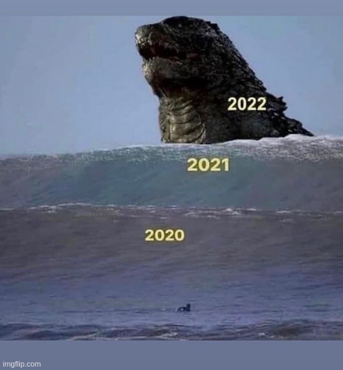
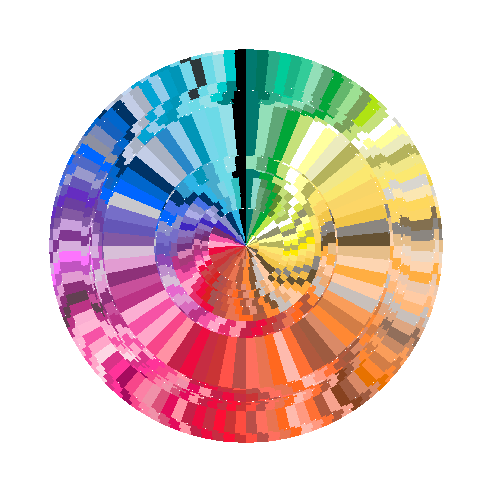

![]()
Content note: This post refers briefly to sexual assault
We all saw this back in 2020, right? It seemed pretty funny to me at the time – 2020 was such a messed up year that it seemed hard to believe that 2022 could really be even stranger. Oh how very wrong I was.

My personal life has taken the biggest upheavals. After leaving academia in late 2021, I started my first ever tech job in January 2022… and was let go from my first ever tech job in December 2022. Not gonna lie, that one stings a bit, but mostly because it’s recent and I still haven’t really emotionally processed it all. I’m objective enough to recognise that the situation I’m in now really isn’t so bad. I lost a job that I was enjoying. I feel sad and hurt about losing it because I’m a normal human being who feels sad about things that are sad. It’ll pass. I’ll heal.
Besides, let’s be honest. In a year when I find myself in the situation where I can say things like “okay sure I’ve been sexually assaulted four times in the last 12 months, but technically speaking, only two of the men raped me” in a conversation and have it be entirely true, losing a job just doesn’t carry the level of trauma that it probably should.
On reflection, that is a very horrible sentence to have written.
But it is true. Sexual assault has been a recurring theme in 2022 for me, and while I don’t have much desire to talk about what it feels like to have been repeatedly violated in my personal life, I also don’t feel like I should be ashamed that it happened. I’m not going to make a secret of something that was not my fault. It happened, and I cannot change the fact that it happened. I’ve picked up the pieces as best I can and gone about my life again. What else can I do?
But let’s turn to happier topics, shall we? I’ve said the thing I wanted to say about the dark topics and there’s no need to dwell.
Contributing to the ggplot2 book

I keep a little log of things that I’ve been doing with my time, and it’s interesting to look back at what I was doing in January 2022. It feels like a lifetime ago: on January 9th I merged a big pull request into the work-in-progress 3rd edition of the ggplot2 book that reorganised the scales chapters. I haven’t had time to do anything else on that since January, but I really like how the writing worked out for that (plus it’s always fun to work with Hadley!) The book now has four separate chapters on scales. Three of the chapters focus on the practicalities of working with scales:
- Position scales: ggplot2-book.org/scale-position.html
- Colour scales: ggplot2-book.org/scale-colour.html
- Scales for other aesthetics: ggplot2-book.org/scale-other.html
There’s a fourth one too, which talks more about the underlying theory:
- Scales and guides ggplot2-book.org/scales-guides.html
Having done earlier work helping out with revising the Maps and Annotations chapters, it felt really nice to be able to work on that. It’s possible I’ll have more time to revisit in 2023, but at this point all my plans are up in the air so who knows.
Writing about Apache Arrow

For most of the year I was gainfully employed to work on open source projects – Apache Arrow in particular – and I’ve written a lot over the last year about it. On this blog alone here’s what I wrote this year:
- Getting started with Apache Arrow in R. A now slightly dated primer on how to get started. Okay this one was technically November 2021, but it’s the logical beginning of the sequence of posts and I’m including anyway
- Binding Apache Arrow to R. A post about how the dplyr bindings in the arrow R package work and how you can write them yourself
- Data types in Arrow and R. A very long post that walks you through the low level data types used by Arrow and R, and some of the subtle details around translating from one to the other
- Arrays and tables in Arrow. This post builds on the previous one and talks about some of the higher level data structures used in Apache Arrow (Arrays, Tables, Record Batches, etc), and the ways in which they are similar to and different from similar data structures in R (vectors, data frames, etc).
- How to visualise a billion rows of data in R with Apache Arrow. This one was a practical post, walking you through the process of plotting a very large data set
- Passing data between R and Python with reticulate Part one of a two-part series about how you can use Arrow to pass data between R and Python without incurring serialisation costs. In part one I talked about it from an R-centric perspective, using the reticulate R package as the primary tool
- Passing data between Python and R with rpy2 Part two of the same series. This one takes a Pythonic perspective and uses the rpy2 Python library as the primary tool
- Building an Arrow Flight server. One of the underrated features of the Arrow toolkit is that is the Flight RPC protocol: you can use it to efficiently communicate Arrow data over a network. This post is a walkthrough of how to do that in R and Python (mostly Python, really)
- The Arrow Dataset API. The last Arrow post I wrote this year talked about the Arrow Dataset API in more detail than I had done previously.
A lot of these posts are… well, they’re long and they’re detailed. The intention was always to try to create a collection of useful resources with code walkthoughs that I could later fold back into documentation, books, workshops and so on. The nice thing is that this actually did happen. For example…
- I wrote an entire workshop on Larger than memory data workflows with Apache Arrow for the R community. The slides, walkthrough, tutorial, etc are all up on the website
- I contributed a chapter on Arrow to the 2nd edition of R for Data Science. Given the centrality of R4DS in the R community I kind of feel like that’s probably one of the more useful things I actually managed to get done!
But probably the biggest thing is that a lot of the content from my other writing worked its way into a big pull request I wrote updating the documentation for the arrow R package. It hasn’t quite gone properly live yet, and I don’t think it will migrate to the front page until the 11.0.0 release in January, but it’s currently available on the dev version of the documentation.
- I completely rewrote the Get started page so that it is now more novice friendly and helps orient new users
- I added a new article highlighting the read/write capabilities of Arrow
- I added a new article talking about the data wrangling using the dplyr interface that was partly new material, and partly reworked existing content
- I tidied up the article on multi-file Dataset objects
- I added a new article on data objects in Arrow that reworked a lot of content I’d originally written for my blog
- I added a new article on data types in Arrow that, again, reworked a lot of content I’d written for my blog
- I laid the groundwork for a tidier discussion of metadata in Arrow that I’d intended to expand on later
Oh, and I also wrote the Arrow Visual Identity page and all the code for generating the various logos!
There was a lot more I wanted to do with Arrow, to be honest. For example, the R package doesn’t handle Arrow Flight correctly at the moment (it works in special cases but it badly needs updating), and – before I found myself unemployed – I had talked about writing bindings so that the R package implemented the Arrow Flight protocol correctly. Maybe one day I’ll write them. I don’t think it’s actually very hard because the hard work is already done in the C++ library, but… oddly, I think I’ll take a bit of a break from Arrow work while I let my emotions about my employment situation settle.
Art
I made a lot of generative art in 2022, though maybe not quite as much as in 2021. I added nine new galleries on my art website art.djnavarro.net, but really the big thing for me in art this year was being invited to give a generative art workshop at rstudio::conf. So, thanks to the support of folks at Posit, there is now a fully fledged freely available tutorial – okay it’s closer to being an entire book, really – on how to make generative art with R. It’s online at art-from-code.netlify.app. It makes me really happy that I was lucky enough to be able to write that one. I was also interviewed for the DSxD book on The Future of Data Science for my artistic work! Oh, and one of my art pieces was used – with my permission freely given to the authors because they are lovely – as a the cover of a book on transgender sexual health, which I think is really cool.
Academia
Somehow, despite the fact that I am no longer in academia, I managed to publish some academic papers… in my spare time, like normal people do. To be fair though I didn’t actually do much of the work this year: these were all project that I’d committed to while I was still in academia. They were mostly papers that had been accepted or in the final stages of revision at the start of 2021 and have been slowly emerging from the pipeline one by one. It’s hard to know what to say about my academic output given that I’m no longer invested in the peculiar norms of the academia. It’s not my world anymore. I care a lot about some of the values, and so I’m still maintaining a personal archive as well as contributing my papers to institutional and other public archives, but… look, if ever you feel a need to ask “wait, what was Danielle’s academic research all about?” I moved all that to papers.djnavarro.net at the end of 2022.
What else?

I did a lot of other things in 2022. There’s really no need to try to go through all of them. But here are some other personal favourites that made an appearance on this blog:
- I wrote an R package on multi-threaded task queues: blog.djnavarro.net/queue
- I wrote about Crayola crayon colours and some fun data wrangling problems: blog.djnavarro.net/crayola-crayon-colours
- I wrote an absurdly popular blog post about mastodon: blog.djnavarro.net/what-i-know-about-mastodon/
- I wrote a post that I thought was absurdly-popular (until the mastodon thing happened) about porting this blog from distill to quarto: blog.djnavarro.net/porting-to-quarto
So what happens next?
Arriving at the end of this post, I find myself very unsure about what comes next. It’s been such a strange year. I’m proud of the work that I’ve done and the projects I’ve completed. It feels good to be able to look at the list above and think yeah that’s actually a pretty decent body of work, and I could have added more if I’d wanted to. I think I’ve used my time well? I’ve accomplished a lot and learned a lot. But at the same time these things sit against a stunningly horrible backdrop, and it hasn’t been easy coping with that. In general I try not to talk about those kinds of topics on this blog – this is a data science blog, after all, and it’s not really a place for talking about sexual assault and what can do to your sense of self worth – but I suppose I would like it if 2023 goes a little differently. Not sure I can manage another year like this one.
Reuse
Citation
@online{navarro2022,
author = {Navarro, Danielle},
title = {A Very Strange Year},
date = {2022-12-26},
url = {https://blog.djnavarro.net/posts/2022-12-26_strange-year},
langid = {en}
}